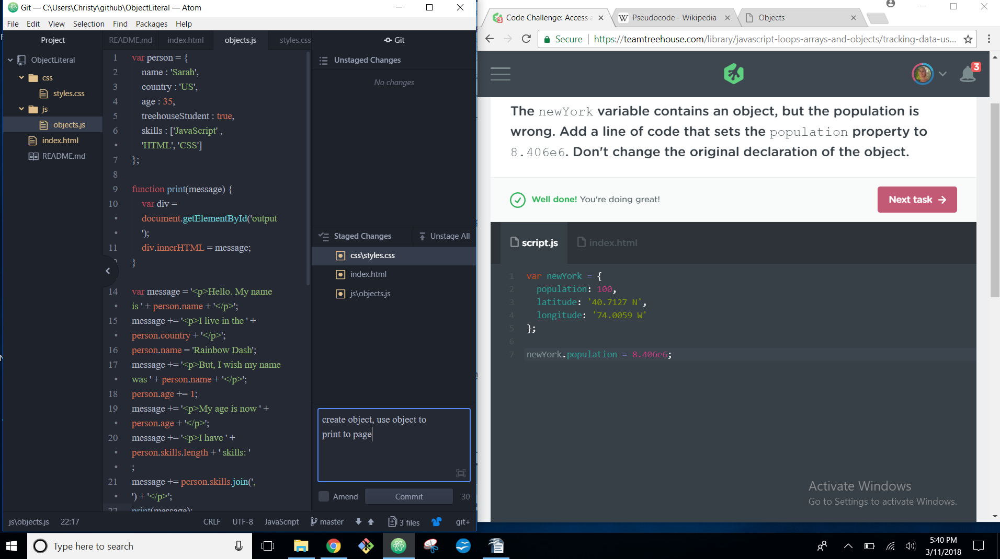

Christy Burris
.jpg)
Front-End Web Developer
Master's Degree graduate dedicated to designing responsive web layouts in order to optimize consumer experience and increase productivity within the company.


Master's Degree graduate dedicated to designing responsive web layouts in order to optimize consumer experience and increase productivity within the company.
Passionate Master's Degree graduate dedicated to designing responsive web layouts in order to optimise consumer experience and increase productivity within the company. I am currently enrolled in TeamTreehouse, where I am actively progressing towards completing the Front-End Web Development track.
Ashford Univevrsity | 05/2016 - 08/2017 Master's in Teaching & Learning with Technology University of California, Davis | 9/2011- 6/2015 Bachelor’s in Psychology w/ emphasis in Child Development TeamTreehouse | 10/2017 - Current Front-End Web Development
Over 20 hours of writing clean and well commented HTML markup Debug lines of code efficiently utilizing Chrome Developer Tools 4 repositories dedicated to responsive CSS Flexbox layouts using the Mobile First Approach 5 repository utilizing JavaScript Loops, Arrays and Objects 4 web sites created using GUI interfaces such as: Weebly, Google Sites, Zunal and Blogger 2 months exploration with Version Control Systems such as Git and Github 7 years collaborating with peers via Google Applications such as Docs, Drive, Sites, Slides, Sheets and Forms 11 years creating, sharing and presenting with Microsoft Software such as Word, PowerPoint and Excel
Github Quickly and efficiently create and link new repositories from Atom.io to Github from within text editor 17 repositories and counting, including portfolio repository “resumeLandingPage” Click here to view my source code: Github Account TeamTreehouse 22 hours completed, obtaining 33 Achievements and counting Courses completed: Introduction to HTML and CSS, HTML Basics, CSS Basics, JavaScript Basics, CSS Layout Basics, Responsive Layouts, CSS Flexbox Layout, JavaScript Loops, Arrays and Objects Click here to view my current educational progress and achievements: TeamTreehouse Profile Skills to Learn at the Moment jQuery Basics, Bootstrap 4 Basics, React, Object-Oriented JS, Object-Oriented PHP, JavaScript and the DOM, AJAX, Wordpress
Teacher's Assistant: Unpaid Internship | Palmdale School District| Palmdale, CA 93550 | Aug 2016 – Current Administrative Assistant:Unpaid Internship | McDonald’s | Lancaster, CA 93535 | September 2015 - July 2017 Teacher’s Assistant | Yolo County YMCA | Woodland, CA 95695| February 2014 -May 2015 Pet Stylist Apprentice | Petco | Davis, CA 95616 | July 2013 - February 2014